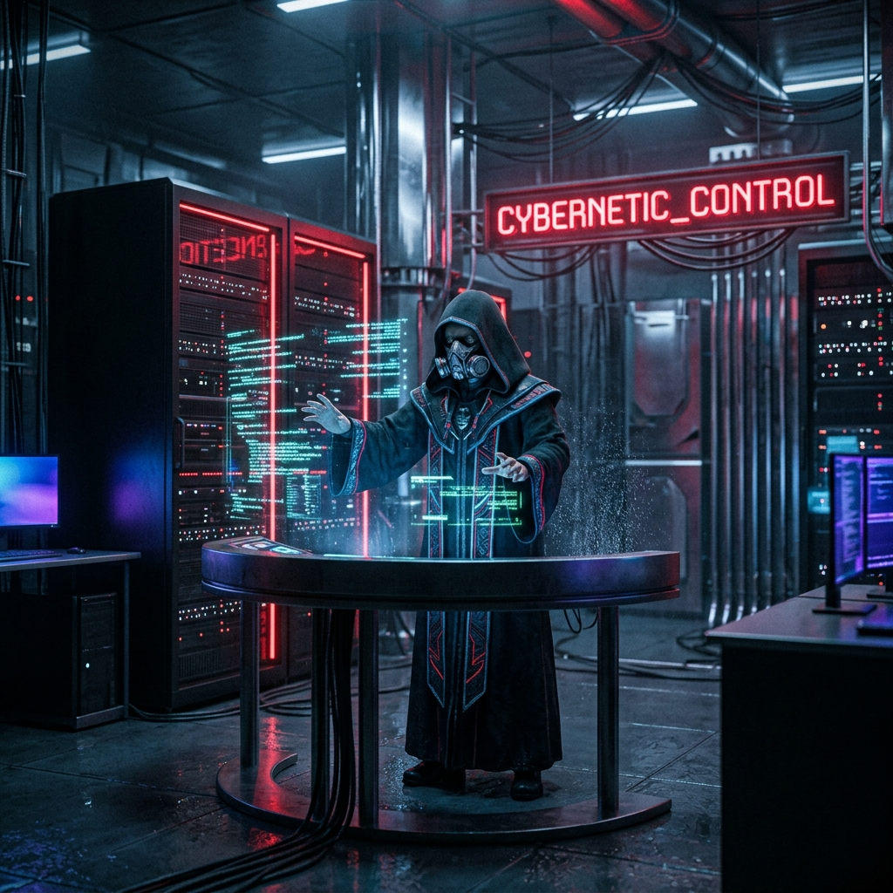
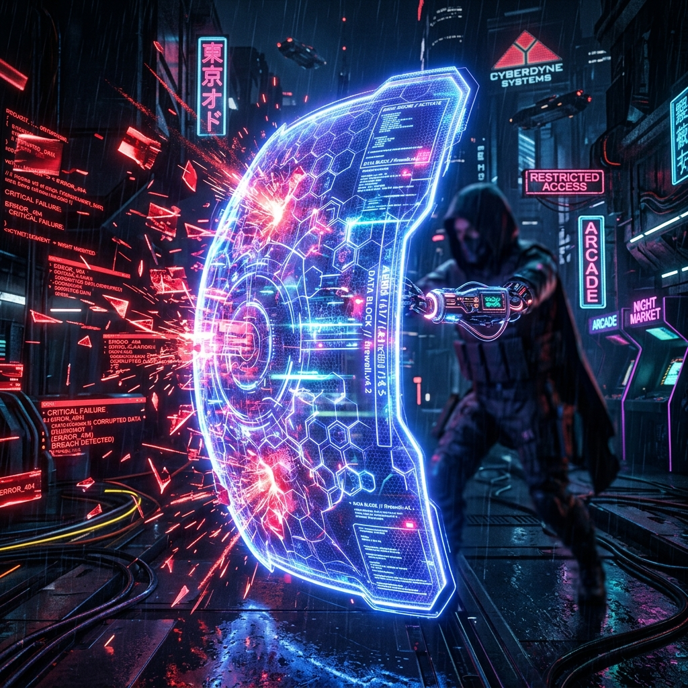

HOW WE OBLITERATE TRADITIONAL DEVELOPMENT
In ons ecosysteem is de menselijke expert de "Ceremonial Master". Jij definieert de bedrijfslogica, veiligheidsgrenzen en de gewenste UI-richtlijnen (glassmorphism, dark theme). Vervolgens vertaalt de Primary Agent deze abstracte eisen razendsnel naar een cryptografisch goedgekeurd implementation_plan.md.

Het bouwen van een database met 1000+ dynamische video templates kost een mens weken. Wij lossen dit op door asynchroon een Scraping Swarm te lanceren. Via de invoke_subagent tool spawnen we parallelle AI-werkers in de achtergrond. Zij itereren autonoom door de folders, parseren URL's via regex, en structureren dit bliksemsnel in videos_data.js.
Wanneer sub-agents dreigen vast te lopen of resource-quota overschrijden, is handmatig ingrijpen te traag. Agents communiceren status via send_message. Zodra het veiligheidssysteem een oneindige loop detecteert, escaleert de Master Agent direct en forceert een kill_all via de manage_subagents API. Daardoor crasht het project nooit, en besparen we 90% in server-costs.

Legacy code en concurrentie-restanten (zoals "Playbox") opschonen? Wij sturen geen team van junior developers. Een gespecialiseerde audit-agent schrijft en executeert on-the-fly Python scripts (zoals remove_playbox.py) die direct 29 HTML bestanden parsen en herschrijven in fracties van seconden, gevolgd door een globale injectie van de nieuwe CSS UI laag.